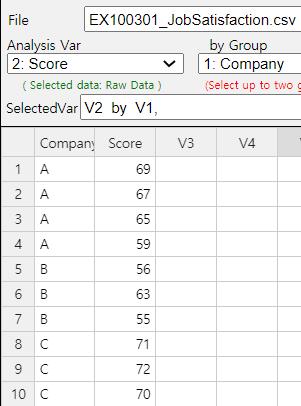
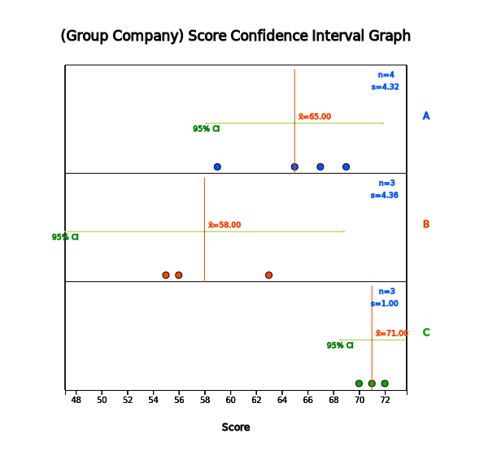
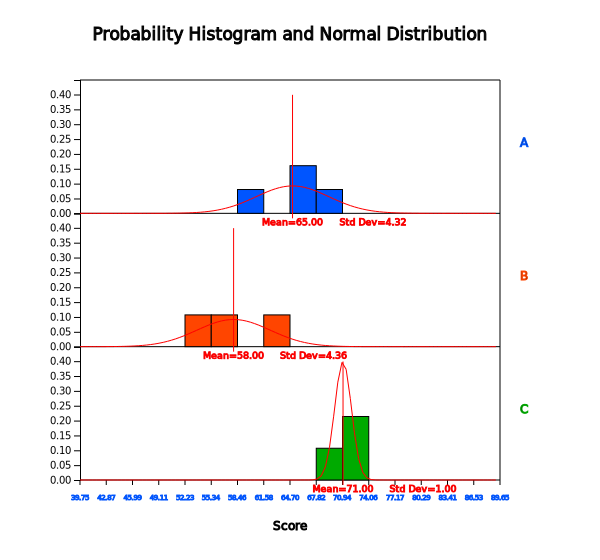
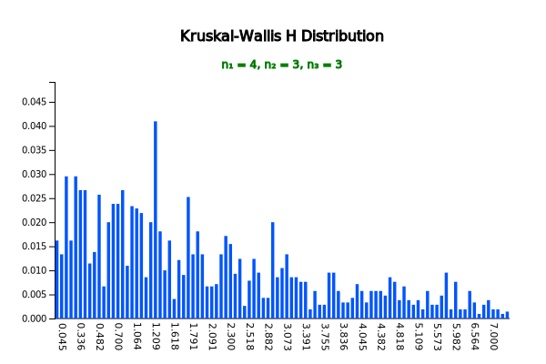
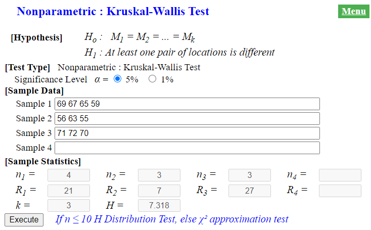

Since nonparametric tests are done by using the converted data such as ranks, there may be some loss of information about the data. Therefore, if data are normally distributed, there is no reason to apply a nonparametric test. However, a nonparametric test would be a more appropriate method if data were selected from a population that did not follow a normal distribution.
Chapter 10. Nonparametric Testing Hypothesis
10.3 Nonparametric Test for Comparing Locations of Several Populations
[presentation] [video]
The testing hypothesis for several population means in Chapter 9 was possible if each population could be
assumed to be a normal distribution and has the same population variance. However, the assumption that the
population follows a normal distribution may not be true for real-world data, or that there may not be enough
data to assume a normal distribution. Alternatively, if data are ordinal such as ranks, then the parametric test
is not appropriate. In this case, a nonparametric test is used by converting data into ranks without making
assumptions about the population distribution. This section introduces the Kruskal-Wallis test corresponding to
the completely randomized design of experiments and the Friedman test corresponding to the randomized block
design of experiments in Chapter 9.
10.3.1 Completely Randomized Design: Kruskal-Wallis Test
The Kruskal–Wallis test extends the Wilcoxon rank sum test for two populations. Consider the following example.
Example 10.3.1
The result of a survey of the job satisfaction by sampling employees of three companies are as follows.
From this data, can you say that the three companies have different job satisfaction? (unit: points out of 100 scores)
Company A 69 67 65 59
Company B 56 63 55
Company C 71 72 70
[Ex] ⇨ eBook ⇨ EX100301_JobSatisfaction.csv
1) Draw a histogram of the data to see whether the comparison of the job satisfaction for the three companies can be made using a parametric test.
2) Using the Kruskal-Wallis test, which is a nonparametric test, find whether the three companies have
the same job satisfaction or not with the significance level of 5%
3) Check the above result of the Kruskal-Wallis test using『eStat』.
Answer
1) The parametric method for testing the hypothesis that three population means are the same is
the one-way analysis of variance studied in Chapter 9 and it requires the assumption that
the populations are normal distributions. Since the sample sizes are small, \(n_1\) = 4, \(n_2\) = 3,
\(n_3\) =3, in each of the population respectively we need to examine if each sample data satisfy
the normality assumption.
Enter the data as shown in <Figure 10.3.1> in『eStat』.
|

<Figure 10.3.1> 『eStat』data input
|
Click the ANOVA icon . Select ‘Score’ as ‘Analysis Var’ and ‘Company’ as ‘by Group’ variable
in the variable selection box. Then a dot graph with the 95% confidence interval of each population
mean will appear as in <Figure 10.3.2>. Company C has the high average of satisfaction scores,
followed by Company A and Company B. However, it should be tested if these differences are statistically
significant. Clicking the [Histogram] button in the options window below the graph will reveal the
histogram and its normal distribution curve for each company, as in<Figure 10.3.3>.

<Figure 10.3.2> Dot graph and the confidence interval by company

<Figure 10.3.3> Histogram by company
Looking at the histogram, the data are not sufficient to assume that the population follows
a normal distribution, because the number of data is so small. In such a case, applying the parametric
hypothesis test such as the ANOVA F-test may lead to errors. The hypothesis for this problem is to test
whether the location parameters \(\small M_1\), \(\small M_2\), \(\small M_3\) of the three populations are the same or not as follows:
\(\qquad \small H_0 : M_1 = M_2 = M_3\)
\(\qquad \small H_1 : \) At least one pair of location parameters is not the same.
The Kruskal–Wallis test combines all three samples into a single set of data and calculate ranks
of this data. If there is a tie, then the average rank will be assigned. Then the sum of the ranks
in each sample, \(\small R_1 , R_2 , R_3\), is calculated. The test statistic \(\small H\) for the
Kruskal–Wallis test is similar to the \(\small F\)-test by converting sample data into ranks as follows:
\(\qquad \small H = \frac{12}{n(n+1)} \sum_{j=1}^{3} \frac{R_j^2}{n_j} - 3(n+1)\)
To obtain ranks of the combined sample, it is convenient to arrange the data in ascending order separately and then rank the whole data as shown in Table 10.3.1.
Table 10.3.1 A table to calculate the sum of ranks in each sample
| Sorted Data of Sample 1 | Sorted Data of Sample 2 | Sorted Data of Sample 3 | Ranks of Sample 1 | Ranks of Sample 2 | Ranks of Sample 3 |
|---|---|---|---|---|---|
| 55 | 1 | ||||
| 56 | 2 | ||||
| 59 | 3 | ||||
| 63 | 4 | ||||
| 65 | 5 | ||||
| 67 | 6 | ||||
| 69 | 7 | ||||
| 70 | 8 | ||||
| 71 | 9 | ||||
| 72 | 10 | ||||
| Sum of ranks | \(R_{1}=21\) | \(R_{2}=7\) | \(R_{3}=28\) |
The total sum of ranks is 1 + 2 + \(\cdots\) + 10 = \(\frac{10(10+1)}{2}\) = 55. The sum of ranks for
sample 1 is \(\small R_1\) = 21, for sample 2 is \(\small R_2\) = 7, and for sample 3 is
\(\small R_3\) = 27. When the number of data in each sample is taken into account, if \(\small R_1\),
\(\small R_2\), and \(\small R_3\) are similar, the null hypothesis that three population location
parameters are the same would be accepted. In this example, despite of the small sample size for sample 3,
\(\small R_3\) is larger thant \(\small R_1\) or \(\small R_2\). Also \(\small R_1\) is larger than
\(\small R_2\). Based on these differences, can you conclude that the three population location parameters
are statistically different?
In the above example, the \(\small H\) statistic is as follows:
\(\qquad \small H = \frac{12}{10(10+1)} ( \frac{21^2}{4} + \frac{7^2}{3} + \frac{27^2}{3} ) - 3(10+1) \) = 7.318
If the null hypothesis is true, the distribution of the test statistic should be known to investigate how large a value of \(\small H\) is statistically significant. If \(n\) = 10, the number of cases for ranking {1,2,3, ... , 10} is 10! = 3,628,800. It is not easy to examine all of these possible rankings to create a distribution table of \(\small H\). 『eStatU』 shows the distribution of the Kruskal–Wallis for \(n_1\) = 4, \(n_2\) = 3, and \(n_3\) = 3 as shown in <Figure 10.3.4>, and a part of the distribution table as in Table 10.3.2. As shown in the figure, the distribution of \(\small H\) is an asymmetrical distribution.
|

<Figure 10.3.4> Kruskal Wallis H distribution when \(n_1 = 4, n_2 = 3, n_3 = 3\)
|
Table 10.3.2 Kruskal Wallis H distribution when \(n_1 = 4, n_2 = 3, n_3 = 3\)
| Kruskal Wallis H distribution | \(k = 3\) | ||
|---|---|---|---|
| \(n_1 = 4\) | \(n_2 = 3\) | \(n_3 = 3\) | |
| \(x\) | \(P(X = x)\) | \(P(X \le x)\) | \(P(X \ge x)\) |
| 0.018 | 0.0162 | 0.0162 | 1.0000 |
| 0.045 | 0.0133 | 0.0295 | 0.9838 |
| \(\cdots\) | \(\cdots\) | \(\cdots\) | \(\cdots\) |
| 5.727 | 0.0048 | 0.9543 | 0.0505 |
| 5.791 | 0.0095 | 0.9638 | 0.0457 |
| 5.936 | 0.0019 | 0.9657 | 0.0362 |
| 5.982 | 0.0076 | 0.9733 | 0.0343 |
| 6.018 | 0.0019 | 0.9752 | 0.0267 |
| 6.155 | 0.0019 | 0.9771 | 0.0248 |
| 6.300 | 0.0057 | 0.9829 | 0.0229 |
| 6.564 | 0.0033 | 0.9862 | 0.0171 |
| 6.664 | 0.0010 | 0.9871 | 0.0138 |
| 6.709 | 0.0029 | 0.9900 | 0.0129 |
| 6.745 | 0.0038 | 0.9938 | 0.0100 |
| 7.000 | 0.0019 | 0.9957 | 0.0062 |
| 7.318 | 0.0019 | 0.9976 | 0.0043 |
| 7.436 | 0.0010 | 0.9986 | 0.0024 |
| 8.018 | 0.0014 | 1.0000 | 0.0014 |
\(\small H\) test is a right tail test and the 5 percentile from the right corresponding to the significance level is
approximately \(\small P(X \ge 5.727)\) = 0.0505. Note that there is no exact 5 percentile in case of a discrete
distribution. Hence, the decision rule to test the null hypothesis is as follows:
\(\qquad\) ‘If \(\small H \gt \) 5.727, then reject \(\small H_0\) ’
Since \(\small H\) = 7.318 in this example, we reject \(\small H_0\).
3) In 『eStatU』, enter data as <Figure 10.3.5> and click the [Execute] button. Then the sample
statistics are calculated and the test result is shown as in <Figure 10.3.6>. The critical line
for values containing 5 percentile of the significance level is shown here. For a discrete
distribution, the choice of the final rejection region shall be determined by the analyst.
|

<Figure 10.3.5> 『eStatU』 Kruskal-Wallis test
|

<Figure 10.3.6> Kruskal-Wallis test
『eStat』 can also be used to conduct the Kruskal–Wallis \(\small H\) test. Enter data as
<Figure 10.3.1> and click the ANOVA icon. Select ‘Score’ as ‘Analysis Var’ and ‘Company’
as ‘by Group’ variable in the variable selection box. Then a dot graph with the 95% confidence interval
of the population mean in each company will appear as <Figure 10.3.2>. If you press the
[Kruskal–Wallis test] button in the options window below the graph, the same test graph and test result
table will appear as in <Figure 10.3.7>.

<Figure 10.3.7> Result of the Kruskal-Wallis test
Let us generalize the Kruskal–Wallis \(H\) test described so far with an example. Denote
random samples collected independently from the \(k\) populations (at each level of one factor)
when their sample sizes are \(n_1 , n_2 , ... , n_k\) as follows: (\(n = n_1 + n_2 + \cdots + n_k\)).
Table 10.3.3 Notation for random samples from each level
| Lebel 1 | Lebel 2 | \(\cdots\) | Lebel \(k\) | |
|---|---|---|---|---|
| \(X_{11}\) | \(X_{21}\) | \(\cdots\) | \(X_{k1}\) | |
| \(X_{12}\) | \(X_{22}\) | \(\cdots\) | \(X_{k2}\) | |
| \(\cdots\) | \(\cdots\) | \(\cdots\) | \(\cdots\) | |
| \(X_{1n_{1}}\) | \(X_{2n_{2}}\) | \(\cdots\) | \(X_{kn_{k}}\) | |
| Mean \({\overline X}_{1\cdot}\) | Mean \({\overline X}_{2\cdot}\) | \(\cdots\) | Mean \({\overline X}_{k\cdot}\) | Total Mean \({\overline X}_{\cdot \cdot}\) |
The statistical model of the Kruskal-Wallis test is as follows:
$$
X_{ij} = \mu + \tau_i + \epsilon_{ij}, \quad i=1,2,... k; j=1,2,...,n_i \; \text{where} \sum_{i=1}^{k} \tau_i = 0.
$$
Here \(\tau_i\) represents the effect of the level \(i\) and \(\epsilon_{ij}\)’s are independent and follow the same continuous distribution. The hypothesis of the Kruskal-Wallis test is as follows: $$ \begin{align} H_0 &: \tau_1 = \tau_2 = \cdots = \tau_k \\ H_1 &: \text{At least one pair of } \tau_i \text{ is not equal.} \end{align} $$ For the Kruskal–Wallis test, ranking data for the combined sample must be created. Table 10.3.4 is a notation of ranking data for each level.
Table 10.3.4 Notation of ranking data in each level
| Lebel 1 | Lebel 2 | \(\cdots\) | Lebel \(k\) | ||
|---|---|---|---|---|---|
| \(R_{11}\) | \(R_{21}\) | \(\cdots\) | \(R_{k1}\) | ||
| \(R_{12}\) | \(R_{22}\) | \(\cdots\) | \(R_{k2}\) | ||
| \(\cdots\) | \(\cdots\) | \(\cdots\) | \(\cdots\) | ||
| \(R_{1n_{1}}\) | \(R_{2n_{2}}\) | \(\cdots\) | \(R_{kn_{k}}\) | ||
| Sum of ranks | Sum \({R}_{1\cdot}\) | Sum \({R}_{2\cdot}\) | \(\cdots\) | Sum \({R}_{k\cdot}\) | |
| Mean of ranks | Mean \({\overline R}_{1\cdot}\) | Mean \({\overline R}_{2\cdot}\) | \(\cdots\) | Mean \({\overline R}_{k\cdot}\) | Total Mean \({\overline R}_{\cdot \cdot} = \frac{n+1}{2}\) |
The sum of squares for the one-way analysis of variance studied in Chapter 9 by using the ranking data in
Table 10.3.4 are as follows:
$$
\begin{align}
SST & = \sum_{i=1}^k \sum_{j=1}^{n_i} ( R_{ij} - {\overline R}_{\cdot \cdot} )^2 = \sum_{k=1}^n (k -{\overline R}_{\cdot \cdot} )^2 = n(n+1)(n-1) \\
SSTr & = \sum_{i=1}^k \sum_{j=1}^{n_i} ( {\overline R}_{i \cdot} - {\overline R}_{\cdot \cdot} )^2 \\
SSE & = SST - SSTr \\
\end{align}
$$
Also, the statistic for the \(F\)-test is as follows:
$$
F = \frac {MSTr}{MSE} = \frac { \frac{SSTr}{k-1}} {\frac{SSE}{n-k}} = \frac {\frac{SSTr}{k-1}} {\frac{SST-SSTr}{n-k}} = \frac{\frac{n-k}{k-1}} {\frac{SST}{SSTr} -1}
$$
Since \(SST\) is a constant, the statistic for the \(F\)-test is proportional to \(SSTr\).
The statistic for the Kruskal-Wallis test \(H\) is proportional to \(SSTr\) as follows: $$ \begin{align} H & = \frac {12}{n(n+1)} \sum_{i=1}^{k} n_{i} ( {\overline {R}}_{i \cdot} - {\overline {R}}_{\cdot \cdot} )^{2} \\ & = \frac{12}{n(n+1)} \sum_{i=1}^{k} {R}_{i \cdot}^2 - 3(n+1) \\ \end{align} $$
The multiplication constant \( \frac{12}{n(n+1)}\) in the definition of \(H\) statistics is intended to ensure that the statistic follows approximately the chi-square distribution with \(k-1\) degrees of freedom.
The distribution of the Kruskal-Wallis test statistic \(H\), denoted as \(h(n_1 ,n_2 , ... , n_k )\), can be obtained by considering all possible cases of ranks {1, 2, ,\(n\)} which is \(n!\). 『eStatU』 provides the table of \(h(n_1 ,n_2 , ... , n_k )\) up to \(n\) = 10. \(h(n_1 ,n_2 , ... , n_k )_α\) denotes the right end 100\(\times α\) percentile, but it might not have the exact value of this percentile, because \(h(n_1 ,n_2 , ... , n_k )\) is a discrete distribution. In this case, the middle of two adjacent values of 100\(\times α\) percentile is often used. The decision rule of the Kruskal-Wallis test is as Table 10.3.5.
Table 10.3.5 Kruskal-Wallis test
| Hypothesis | Decision Rule Test Statistic \(H\) |
|---|---|
| \( \; H_0 : {\tau}_1 = {\tau}_2 = \cdots = {\tau}_k \) \( \; H_1 : \text{At least one pair of } {\tau}_i \) is not equal |
If \( H > h(n_1 , n_2 , ... n_k )_{α} \), then reject \( H_0 \) |
☞ If there are tied values in the combined sample, assign the average of ranks.
The distribution of the Kruskal-Wallis \(H\) statistic is independent of a population distribution.
In other words, the Kruskal-Wallis test is a distribution-free test.
If the null hypothesis is true and the sample size is large enough, the test statistic \(H\) is approximated by the chi-square distribution with \(k-1\) degrees of freedom. Table 10.3.6 summarizes the decision rule for the Kruskal-Wallis test in case of large samples.
Table 10.3.6 Kruskal-Wallis test in case of large samples.
| Hypothesis | Decision Rule Test Statistic \(H\) |
|---|---|
| \( \; H_0 : {\tau}_1 = {\tau}_2 = \cdots = {\tau}_k \) \( \; H_1 : \text{At least one pair of } {\tau}_i \) is not equal |
If \( H > {\chi}^2_{k-1; α} \), then reject \( H_0 \) |
If there is a tie in the combined sample, the average rank is assigned to each data. In this case, the
statistic \(H\) shall be modified as follows:
$$
H' = \frac{H} {1 - \sum_{j=1}^{g} \frac{T_j}{n^3 - n} }
$$
Here \(g\)= (number of tied groups), \(T_j = \sum_{j=1}^{g} {t}_{j} ({t}_{j}-1)({t}_{j}+1) \) where
\(t_j\) = (the size of the \(j^{th}\) tie group, i.e., the number of observations in the tie group).
If there is no tie, the size of the \(j^{th}\) tie group is 1 and \(t_j\) = 1.
|
Practice 10.3.1
A bread maker wants to compare the three new mixing methods of ingredients. 15 breads were made
by each mixing method (A, B, C) of 5 pieces, and a group of judges who did not know the difference
in material mixing ratio gave the following points. Test the null hypothesis that there is no difference
in taste according to the mixing methods at the significance level of 0.05.
Mixing ratio:
Method A: 72 88 70 87 71
Method B: 85 89 86 82 90
Method C: 94 94 88 87 89
[Ex] ⇨ eBook ⇨ PR100301_ScoreByMixingMethod.csv
|